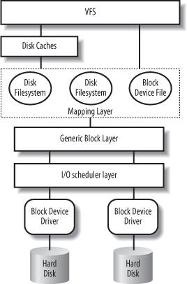
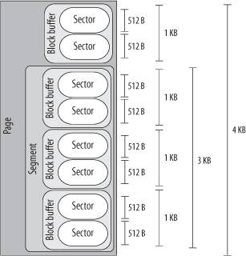

{% include JB/setup %}
{% raw %}
<div>


<a name="understandlk-CHP-14-SECT-1"></a>
<h3 class="docSection1Title">14.1. Block Devices Handling</h3><a name="IDX-CHP-14-3589"></a>
<p class="docText1">Each operation on a block device driver involves a large number of kernel components; the most important ones are shown in <a class="pcalibre5 docLink pcalibre1" href="#understandlk-CHP-14-FIG-1">Figure 14-1</a>.</p>
<p class="docText1">Let us suppose, for instance, that a process issued a <tt class="calibre25">read( )</tt><a name="IDX-CHP-14-3590"></a> 
 system call on some disk filewe'll see that write requests are handled essentially in the same way. Here is what the kernel typically does to service the process request:</p>
<div class="calibre44"><ol class="docList1" type="1"><li class="calibre12"><div class="calibre45"><p class="docList">The service routine of the <tt class="calibre25">read( )</tt> system call activates a suitable VFS function, passing to it a file descriptor and an offset inside the file. The Virtual Filesystem</p><a name="understandlk-CHP-14-FIG-1"></a><p class="calibre14"><center class="calibre8">
<h5 class="docFigureTitle1">Figure 14-1. Kernel components affected by a block device operation</h5>
</center></p><p class="docList">is the upper layer of the block device handling architecture, and it provides a common file model adopted by all filesystems supported by Linux. We have described at length the VFS layer in <a class="pcalibre5 docLink pcalibre1" href="understandlk-CHP-12.html#understandlk-CHP-12">Chapter 12</a>.</p></div></li><li class="calibre12"><div class="calibre45"><p class="docList">The VFS function determines if the requested data is already available and, if necessary, how to perform the read operation. Sometimes there is no need to access the data on disk, because the kernel keeps in RAM the data most recently read fromor written toa block device. The disk cache mechanism is explained in <a class="pcalibre5 docLink pcalibre1" href="understandlk-CHP-15.html#understandlk-CHP-15">Chapter 15</a>, while details on how the VFS handles the disk operations and how it interfaces with the disk cache and the filesystems are given in <a class="pcalibre5 docLink pcalibre1" href="understandlk-CHP-16.html#understandlk-CHP-16">Chapter 16</a>.</p></div></li><li class="calibre12"><div class="calibre45"><p class="docList">Let's assume that the kernel must read the data from the block device, thus it must determine the physical location of that data. To do this, the kernel relies on the <span class="docEmphasis">mapping layer</span><a name="IDX-CHP-14-3591"></a> 
, which typically executes two steps:</p><div class="calibre44"><ol class="docList4" type="a"><li class="calibre12"><div class="calibre45"><p class="docList">It determines the block size of the filesystem including the file and computes the extent of the requested data in terms of <span class="docEmphasis">file block numbers</span><a name="IDX-CHP-14-3592"></a> 
. Essentially, the file is seen as split in many blocks, and the kernel determines the numbers (indices relative to the beginning of file) of the blocks containing the requested data.</p></div></li><li class="calibre12"><div class="calibre45"><p class="docList">Next, the mapping layer invokes a filesystem-specific function that accesses the file's disk inode and determines the position of the requested data on disk in terms of <span class="docEmphasis">logical block numbers</span>. Essentially, the disk is seen as split in blocks, and the kernel determines the numbers (indices relative to the beginning of the disk or partition) corresponding to the blocks storing the requested data. Because a file may be stored in nonadjacent blocks on disk, a data structure stored in the disk inode maps each file block number to a logical block number.<sup class="docFootnote"><a class="pcalibre5 docLink pcalibre1" href="#understandlk-CHP-14-FN1">[*]</a></sup></p><blockquote class="calibre22"><p class="docFootnote2"><sup class="calibre24"><a name="understandlk-CHP-14-FN1">[*]</a></sup> However, if the read access was done on a raw block device file, the mapping layer does not invoke a filesystem-specific method; rather, it translates the offset in the block device file to a position inside the diskor disk partitioncorresponding to the device file.</p></blockquote></div></li></ol></div><p class="docList">We will see the mapping layer in action in <a class="pcalibre5 docLink pcalibre1" href="understandlk-CHP-16.html#understandlk-CHP-16">Chapter 16</a>, while we will present some typical disk-based filesystems in <a class="pcalibre5 docLink pcalibre1" href="understandlk-CHP-18.html#understandlk-CHP-18">Chapter 18</a>.</p></div></li><li class="calibre12"><div class="calibre45"><p class="docList"><span class="calibre5">The kernel can now issue the read operation on the block device. It makes use of the <span class="docEmphasis">generic block layer</span><a name="IDX-CHP-14-3593"></a> 
, which starts the I/O operations that transfer the requested data. In general, each I/O operation involves a group of blocks that are adjacent on disk. Because the requested data is not necessarily adjacent on disk, the generic block layer might start several I/O operations. Each I/O operation is represented by a "block I/O" (in short, "bio") structure, which collects all information needed by the lower components to satisfy the request</span>.</p><p class="docList">The generic block layer hides the peculiarities of each hardware block device, thus offering an abstract view of the block devices. Because almost all block devices are disks, the generic block layer also provides some general data structures that describe "disks" and "disk partitions." We will discuss the generic block layer and the bio structure in the section "<a class="pcalibre5 docLink pcalibre1" href="understandlk-CHP-14-SECT-2.html#understandlk-CHP-14-SECT-2">The Generic Block Layer</a>" later in this chapter.</p></div></li><li class="calibre12"><div class="calibre45"><p class="docList">Below the generic block layer, the "I/O scheduler " sorts the pending I/O data transfer requests according to predefined kernel policies. The purpose of the scheduler is to group requests of data that lie near each other on the physical medium. We will describe this component in the section "<a class="pcalibre5 docLink pcalibre1" href="understandlk-CHP-14-SECT-3.html#understandlk-CHP-14-SECT-3">The I/O Scheduler</a>" later in this chapter.</p></div></li><li class="calibre12"><div class="calibre45"><p class="docList">Finally, the <span class="docEmphasis">block device drivers</span> take care of the actual data transfer by sending suitable commands to the hardware interfaces of the disk controllers. We will explain the overall organization of a generic block device driver in the section "<a class="pcalibre5 docLink pcalibre1" href="understandlk-CHP-14-SECT-4.html#understandlk-CHP-14-SECT-4">Block Device Drivers</a>" later in this chapter.</p></div></li></ol></div>
<p class="docText1">As you can see, there are many kernel components that are concerned with data stored in block devices; each of them manages the disk data using chunks of different length:</p>
<ul class="calibre11"><li class="calibre12"><p class="docText1">The controllers of the hardware block devices transfer data in chunks of fixed length called "sectors." Therefore, the I/O scheduler and the block device drivers must manage sectors of data.</p></li><li class="calibre12"><p class="docText1">The Virtual Filesystem, the mapping layer, and the filesystems group the disk data in logical units called "blocks." A block corresponds to the minimal disk storage unit inside a filesystem.</p></li><li class="calibre12"><p class="docText1">As we will see shortly, block device drivers should be able to cope with "segments" of data: each segment is a memory pageor a portion of a memory pageincluding chunks of data that are physically adjacent on disk.</p></li><li class="calibre12"><p class="docText1">The disk caches<a name="IDX-CHP-14-3594"></a> 
 work on "pages" of disk data, each of which fits in a page frame.</p></li><li class="calibre12"><p class="docText1">The generic block layer glues together all the upper and lower components, thus it knows about sectors<a name="IDX-CHP-14-3595"></a> 
, blocks, segments, and pages of data.</p></li></ul>
<p class="docText1">Even if there are many different chunks of data, they usually share the same physical RAM cells. For instance, <a class="pcalibre5 docLink pcalibre1" href="#understandlk-CHP-14-FIG-2">Figure 14-2</a> shows the layout of a 4,096-byte page. The upper kernel components see the page as composed of four block buffers of 1,024 bytes each. The last three blocks of the page are being transferred by the block device driver, thus they are inserted in a segment covering the last 3,072 bytes of the page. The hard disk controller considers the segment as composed of six 512-byte sectors.</p>
<a name="understandlk-CHP-14-FIG-2"></a><p class="calibre14"><center class="calibre8">
<h5 class="docFigureTitle">Figure 14-2. Typical layout of a page including disk data</h5>
</center></p><br class="calibre7"/>
<p class="docText1">In this chapter we describe the lower kernel components that handle the block devicesgeneric block layer, I/O scheduler, and block device driversthus we focus our attention on sectors, blocks, and segments.</p>
<a name="understandlk-CHP-14-SECT-1.1"></a>
<h4 class="docSection2Title">14.1.1. Sectors</h4>
<p class="docText1">To achieve acceptable performance, hard disks and similar devices transfer several adjacent bytes at once. Each data transfer operation for a block device acts on a group of adjacent bytes called a <span class="docEmphasis">sector</span>. In the following discussion, we say that groups of bytes are <span class="docEmphasis">adjacent</span><a name="IDX-CHP-14-3596"></a> 
 when they are recorded on the disk surface in such a manner that a single seek operation can access them. Although the physical geometry of a disk is usually very complicated, the hard disk controller accepts commands that refer to the disk as a large array of sectors.</p>
<p class="docText1">In most disk devices, the size of a sector is 512 bytes, although there are devices that use larger sectors (1,024 and 2,048 bytes). Notice that the sector should be considered as the basic unit of data transfer; it is never possible to transfer less than one sector, although most disk devices are capable of transferring several adjacent sectors at once.</p>
<p class="docText1">In Linux, the size of a sector is conventionally set to 512 bytes; if a block device uses larger sectors, the corresponding low-level block device driver will do the necessary conversions. Thus, a group of data stored in a block device is identified on disk by its positionthe index of the first 512-byte sectorand its length as number of 512-byte sectors. Sector indices are stored in 32- or 64-bit variables of type <tt class="calibre25">sector_t</tt>.</p>
<a name="understandlk-CHP-14-SECT-1.2"></a>
<h4 class="docSection2Title">14.1.2. Blocks</h4><a name="IDX-CHP-14-3597"></a>
<a name="IDX-CHP-14-3598"></a>
<a name="IDX-CHP-14-3599"></a>
<a name="IDX-CHP-14-3600"></a>
<p class="docText1">While the sector is the basic unit of data transfer for the hardware devices, the <span class="docEmphasis">block</span> is the basic unit of data transfer for the VFS and, consequently, for the filesystems. For example, when the kernel accesses the contents of a file, it must first read from disk a block containing the disk inode of the file (see the section "<a class="pcalibre5 docLink pcalibre1" href="understandlk-CHP-12-SECT-2.html#understandlk-CHP-12-SECT-2.2">Inode Objects</a>" in <a class="pcalibre5 docLink pcalibre1" href="understandlk-CHP-12.html#understandlk-CHP-12">Chapter 12</a>). This block on disk corresponds to one or more adjacent sectors, which are looked at by the VFS as a single data unit.</p>
<p class="docText1">In Linux, the block size must be a power of 2 and cannot be larger than a page frame. Moreover, it must be a multiple of the sector size, because each block must include an integral number of sectors. Therefore, on 80 x 86 architecture, the permitted block sizes are 512, 1,024, 2,048, and 4,096 bytes.</p>
<p class="docText1">The block size is not specific to a block device. When creating a disk-based filesystem, the administrator may select the proper block size. Thus, several partitions on the same disk might make use of different block sizes. Furthermore, each read or write operation issued on a block device file is a "raw" access that bypasses the disk-based filesystem; the kernel executes it by using blocks<a name="IDX-CHP-14-3601"></a> 
 of largest size (4,096 bytes).</p>
<p class="docText1">Each block requires its own <span class="docEmphasis">block buffer</span>, which is a RAM memory area used by the kernel to store the block's content. When the kernel reads a block from disk, it fills the corresponding block buffer with the values obtained from the hardware device; similarly, when the kernel writes a block on disk, it updates the corresponding group of adjacent bytes on the hardware device with the actual values of the associated block buffer. The size of a block buffer always matches the size of the corresponding block.</p>
<p class="docText1">Each buffer has a "buffer head" descriptor of type <tt class="calibre25">buffer_head</tt>. This descriptor contains all the information needed by the kernel to know how to handle the buffer; thus, before operating on each buffer, the kernel checks its buffer head. We will give a detailed explanation of all fields of the buffer head in <a class="pcalibre5 docLink pcalibre1" href="understandlk-CHP-15.html#understandlk-CHP-15">Chapter 15</a>; in the present chapter, however, we will only consider a few fields: <tt class="calibre25">b_page</tt>, <tt class="calibre25">b_data</tt>, <tt class="calibre25">b_blocknr</tt>, and <tt class="calibre25">b_bdev</tt>.</p>
<p class="docText1">The <tt class="calibre25">b_page</tt> field stores the page descriptor address of the page frame that includes the block buffer. If the page frame is in high memory, the <tt class="calibre25">b_data</tt> field stores the offset of the block buffer inside the page; otherwise, it stores the starting linear address of the block buffer itself. The <tt class="calibre25">b_blocknr</tt> field stores the logical block number (i.e., the index of the block inside the disk partition). Finally, the <tt class="calibre25">b_bdev</tt> field identifies the block device that is using the buffer head (see the section "<a class="pcalibre5 docLink pcalibre1" href="understandlk-CHP-14-SECT-4.html#understandlk-CHP-14-SECT-4.1">Block Devices</a>" later in this chapter).</p>
<a name="understandlk-CHP-14-SECT-1.3"></a>
<h4 class="docSection2Title">14.1.3. Segments</h4>
<p class="docText1">We know that each disk I/O operation consists of transferring the contents of some adjacent sectors fromor tosome RAM locations. In almost all cases, the data transfer is directly performed by the disk controller with a DMA operation (see the section "<a class="pcalibre5 docLink pcalibre1" href="understandlk-CHP-13-SECT-4.html#understandlk-CHP-13-SECT-4.5">Direct Memory Access (DMA)</a>" in <a class="pcalibre5 docLink pcalibre1" href="understandlk-CHP-13.html#understandlk-CHP-13">Chapter 13</a>). The block device driver simply triggers the data transfer by sending suitable commands to the disk controller; once the data transfer is finished, the controller raises an interrupt to notify the block device driver.</p>
<p class="docText1">The data transferred by a single DMA operation must belong to sectors that are adjacent on disk. This is a physical constraint: a disk controller that allows DMA transfers to non-adjacent sectors would have a poor transfer rate, because moving a read/write head on the disk surface is quite a slow operation.</p>
<p class="docText1">Older disk controllers support "simple" DMA operations only: in each such operation, data is transferred from or to memory cells that are physically contiguous in RAM. Recent disk controllers, however, may also support the so-called <span class="docEmphasis">scatter-gather DMA transfers</span><a name="IDX-CHP-14-3602"></a> 
: in each such operation, the data can be transferred from or to several noncontiguous memory areas.</p>
<p class="docText1">For each scatter-gather DMA transfer, the block device driver must send to the disk controller:</p>
<ul class="calibre11"><li class="calibre12"><p class="docText1">The initial disk sector number and the total number of sectors to be transferred</p></li><li class="calibre12"><p class="docText1">A list of descriptors of memory areas, each of which consists of an address and a length.</p></li></ul>
<p class="docText1">The disk controller takes care of the whole data transfer; for instance, in a read operation the controller fetches the data from the adjacent disk sectors and scatters it into the various memory areas.</p>
<p class="docText1">To make use of scatter-gather DMA operations, block device drivers must handle the data in units called <span class="docEmphasis">segments</span><a name="IDX-CHP-14-3603"></a> 
. A segment is simply a memory pageor a portion of a memory pagethat includes the data of some adjacent disk sectors. Thus, a scatter-gather DMA operation may involve several segments at once.</p>
<p class="docText1">Notice that a block device driver does not need to know about blocks, block sizes, and block buffers. Thus, even if a segment is seen by the higher levels as a page composed of several block buffers, the block device driver does not care about it.</p>
<p class="docText1">As we'll see, the generic block layer can merge different segments if the corresponding page frames happen to be contiguous in RAM and the corresponding chunks of disk data are adjacent on disk. The larger memory area resulting from this merge operation is called <span class="docEmphasis">physical segment</span>.</p>
<p class="docText1">Yet another merge operation is allowed on architectures that handle the mapping between bus addresses and physical addresses through a dedicated bus circuitry (the IO-MMU; see the section "<a class="pcalibre5 docLink pcalibre1" href="understandlk-CHP-13-SECT-4.html#understandlk-CHP-13-SECT-4.5">Direct Memory Access (DMA)</a>" in <a class="pcalibre5 docLink pcalibre1" href="understandlk-CHP-13.html#understandlk-CHP-13">Chapter 13</a>). The memory area resulting from this kind of merge operation is called <span class="docEmphasis">hardware segment</span><a name="IDX-CHP-14-3604"></a> 
. Because we will focus on the 80 x 86 architecture, which has no such dynamic mapping between bus addresses and physical addresses, we will assume in the rest of this chapter that hardware segments always coincide with physical segments<a name="IDX-CHP-14-3605"></a> 
.</p>
<a href="31071535.html"></a>
<br class="calibre7"/>

</div>

{% endraw %}

